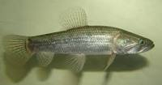

Traíra:
A traíra ou lobó (Hoplias malabaricus) é o gênero de peixes carnívoros de água doce da família Erythrinidae. Além disso, a traíra pertence a um grupo de peixes desprovidos de nadadeira adiposa. A sua espécie esta distribuída em todo território nacional, ele é um dos peixes mais populares do Brasil, presente em quase todos os lagos, açudes, rios e lagoas. Descrição:
A Traíra é um peixe de escamas e possui corpo cilíndrico, com uma boca e olhos grandes, as suas nadadeiras arredondadas, exceto a dorsal. Além disso, este peixe também possui a coloração é marrom ou preta manchada de cinza. Além de possuir dentes fortes e afiadíssimos a sua língua é áspera ao tato, o que a diferencia do trairão, que apresenta a língua lisa. Pesca:
O primeiro passo para a pesca desse peixe é definir o tipo de local com correnteza ou nenhuma. Em seguida utilize uma vara de bambu leve.Utilize iscas soft ou isca natural, as que irão funcionar melhor são os Lambaris, Tilápias, minhocaçu e pedaços de outros peixes de tamanho moderado.
| Traíra |
|  |
| Tamanho maximo: 69 cm Peso:5 kg |
Para contratação: Chssilva1419@gmail.com